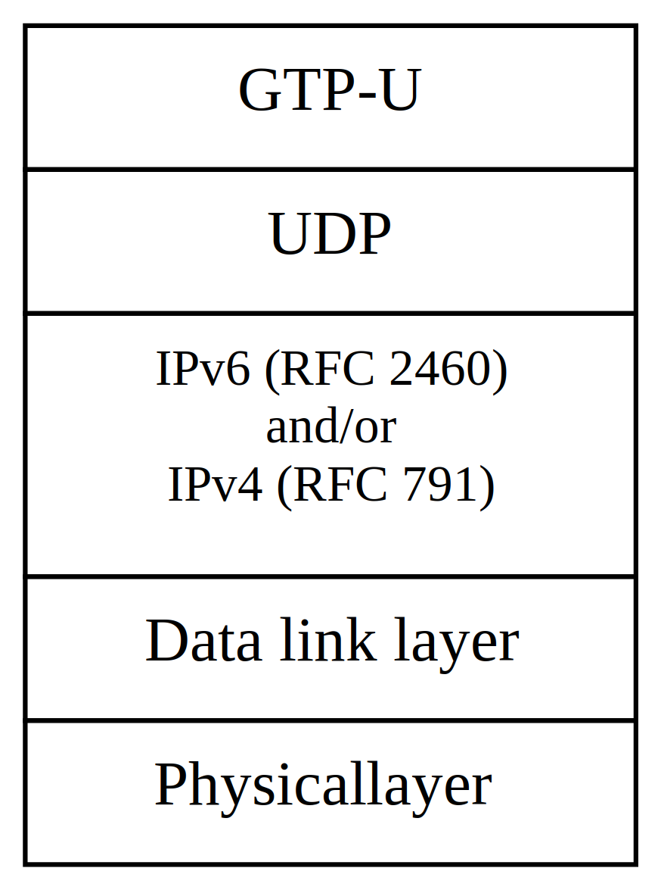

3GPP TS 38.474 V17.0.0 (2022-04)
Technical Specification
3rd Generation Partnership Project;
Technical Specification Group Radio Access Network;
NG-RAN;
F1 data transport
(Release 17)
The present document has been developed within the 3rd
Generation Partnership Project (3GPP TM) and may be further
elaborated for the purposes of 3GPP..
The present document has not been subject to any approval process by the
3GPP Organizational Partners and shall not be implemented.
This Specification is provided for future development work within 3GPP
only. The Organizational Partners accept no liability for any use of
this Specification.
Specifications and Reports for implementation of the 3GPP TM
system should be obtained via the 3GPP Organizational Partners’
Publications Offices.
Keywords
Radio, access
3GPP
Postal address
3GPP support office address
650 Route des Lucioles – Sophia Antipolis
Valbonne – FRANCE
Tel.: +33 4 92 94 42 00 Fax: +33 4 93 65 47 16
Internet
Copyright Notification
No part may be reproduced except as authorized by written
permission.
The copyright and the foregoing restriction extend to reproduction in
all media.
© 2022, 3GPP Organizational Partners (ARIB, ATIS, CCSA, ETSI, TSDSI, TTA, TTC).
All rights reserved.
UMTS™ is a Trade Mark of ETSI registered for the benefit of its members
3GPP™ is a Trade Mark of ETSI registered for the benefit of its
Members and of the 3GPP Organizational Partners
LTE™ is a Trade Mark of ETSI registered for the benefit of its Members
and of the 3GPP Organizational Partners
GSM® and the GSM logo are registered and owned by the GSM Association
Foreword 4
1 Scope 5
2 References 5
3 Definitions and abbreviations 5
3.1 Definitions 5
3.2 Abbreviations 6
4 Data Link Layer 6
5 F1 Interface user plane protocol 6
5.1 General 6
5.2 GTP-U 6
5.3 UDP/IP 6
5.4 Diffserv code point marking 7
Annex A (informative): Change history 8
This Technical Specification has been produced by the 3rd Generation Partnership Project (3GPP).
The contents of the present document are subject to continuing work within the TSG and may change following formal TSG approval. Should the TSG modify the contents of the present document, it will be re-released by the TSG with an identifying change of release date and an increase in version number as follows:
Version x.y.z
where:
x the first digit:
1 presented to TSG for information;
2 presented to TSG for approval;
3 or greater indicates TSG approved document under change control.
Y the second digit is incremented for all changes of substance, i.e. technical enhancements, corrections, updates, etc.
z the third digit is incremented when editorial only changes have been incorporated in the document.
The present document specifies the standards for user data transport protocols and related signalling protocols to establish user plane transport bearers over the F1 interface. The F1 interface provides means for interconnecting a gNB-CU and a gNB-DU of a gNB within an NG-RAN, or for interconnection a gNB-CU and a gNB-DU of an en-gNB within an E-UTRAN.
The following documents contain provisions which, through reference in this text, constitute provisions of the present document.
- References are either specific (identified by date of publication, edition number, version number, etc.) or non‑specific.
- For a specific reference, subsequent revisions do not apply.
- For a non-specific reference, the latest version applies. In the case of a reference to a 3GPP document (including a GSM document), a non-specific reference implicitly refers to the latest version of that document in the same Release as the present document.
[1] 3GPP TR 21.905: "Vocabulary for 3GPP Specifications".
[2] 3GPP TS 29.281: "General Packet Radio System (GPRS) Tunnelling Protocol User Plane (GTPv1-U)".
[3] IETF RFC 768 (1980-08): "User Datagram Protocol".
[4] IETF RFC 2474 (1998-12): "Definition of the Differentiated Services Field (DS Field) in the Ipv4 and Ipv6 Headers".
[5] IETF RFC 8200 (2017-07): "Internet Protocol, Version 6 (Ipv6) Specification".
[6] IETF RFC 791 (1981-09): "Internet Protocol".
[7] 3GPP TS 38.300: "NR; Overall description; Stage-2".
[8] 3GPP TS 38.401: "NG-RAN; Architecture Description".
[9] 3GPP TS 37.340: "NR; Multi-connectivity; Overall description; Stage-2".
For the purposes of the present document, the terms and definitions given in 3GPP TR 21.905 [1] and the following apply. A term defined in the present document takes precedence over the definition of the same term, if any, in 3GPP TR 21.905 [1].
en-gNB: as defined in TS 37.340 [9].
F1: interface between a gNB-DU and a gNB-CU, providing an interconnection point between the gNB-DU and the gNB-CU.
gNB-CU: as defined in TS 38.401 [8].
gNB-DU: as defined in TS 38.401 [8].
gNB: as defined in TS 38.300 [7].
For the purposes of the present document, the abbreviations given in TR 21.905 [1] and the following apply. An abbreviation defined in the present document takes precedence over the definition of the same abbreviation, if any, in TR 21.905 [1].
GTP GPRS Tunnelling Protocol
IAB Integrated Access and Backhaul
IP Internet Protocol
TEID Tunnel Endpoint Identifier
UDP User Datagram Protocol
Any data link protocol that fulfils the requirements toward the upper layer may be used.
The transport layer for data streams over F1 is an IP based Transport. The following figure shows the transport protocol stacks over F1.

Figure 5.1: Transport network layer for data streams over F1
The GTP-U (TS 29.281 [2]) protocol over UDP over IP shall be supported as the transport for data streams on the F1 interface. The data link layer is as specified in clause 4.
The transport bearer is identified by the GTP-U TEID (TS 29.281 [2]) and the IP address (source TEID, destination TEID, source IP address, destination IP address).
The GTP-U (TS 29.281 [2]) protocol shall be used over the F1 interface between gNB-DU and gNB-CU.
The path protocol used shall be UDP (IETF RFC 768 [3]).
The UDP port number for GTP-U shall be as defined in TS 29.281 [2].
The gNB-DU and the gNB-CU shall support fragmentation and assembly of GTP packets at the IP layer.
The gNB-DU and the gNB-CU shall support Ipv6 (IETF RFC 8200 [5]) and/or Ipv4 (IETF RFC 791 [6]).
There may be one or several IP addresses in the gNB-DU and in the gNB-CU. The packet processing function in the gNB-CU shall send downstream packets of a given bearer to the gNB-DU IP address (received in F1AP) associated to that particular bearer. The packet processing function in the gNB-DU shall send upstream packets of a given bearer to the gNB-CU IP address (received in F1AP) associated to that particular bearer.
The Transport Layer Address signalled in F1AP messages is a bit string of:
a) 32 bits in case of Ipv4 address according to IETF RFC 791 [6]; or
b) 128 bits in case of Ipv6 address according to IETF RFC 8200 [5]; or
c) 160 bits if both Ipv4 and Ipv6 addresses are signalled, in which case the Ipv4 address is contained in the first 32 bits.
IP Differentiated Services code point marking (IETF RFC 2474 [4]) shall be supported. Except the downlink F1-U to the IAB node, the mapping between traffic categories and Diffserv code points shall be configurable by O&M based on 5G QoS Identifier (5QI) , the Priority Level (if explicitly signalled), and other NG-RAN traffic parameters (e.g. ARP). Traffic categories are implementation-specific and may be determined from the application parameters. In the IAB system, the Diffserv code points used for the downlink F1-U shall be configurable by the CU-CP based on the O&M-configured mapping between traffic categories and Diffserv code points.
Annex A (informative):
Change history
| Change history | |||||||
| Date | Meeting | Tdoc | CR | Rev | Cat | Subject/Comment | New version |
| 2017-6 | RAN3 NR ad hoc | The first version, includes technical content endorsed in previous meetings | 0.1.0 | ||||
| 2017-9 | RAN3#97bis | R3-173796 | Rapporteur’s update, minor correction | 0.2.0 | |||
| 2017-10 | RAN3#97bis | R3-174248 | TS 38.474 v0.3.0 covering agreements of RAN3 #97bis | 0.3.0 | |||
| 2017-12 | RAN3#98 | R3-175075 | Baseline pCR to TS 38.474 covering agreements of RAN3#98 | 0.4.0 | |||
| 2017-12 | RAN#78 | RP-172671 | First submission to RAN for approval | 1.0.0 | |||
| 2018-01 | RP-78 | TS approved by RAN plenary | 15.0.0 | ||||
| 2018-06 | RP-80 | RP-181238 | 0002 | F | Rapporteur's correction to TS 38.474 | 15.1.0 | |
| 2018-09 | RP-81 | RP-181920 | 0004 | - | F | Updated reference to IPv6 | 15.2.0 |
| 2019-09 | RP-85 | RP-192166 | 0006 | 1 | F | Correction of DSCP Derivation | 15.3.0 |
| 2020-07 | RP-88-e | RP-201077 | 0007 | 4 | B | Support for IAB | 16.0.0 |
| 2020-12 | RP-90-e | RP-202310 | 0008 | 1 | F | Correction in F1-U on DSCP Derivation in IAB-donor node | 16.1.0 |
| 2022-03 | SA#95-e | Promotion to Release 17 without technical change | 17.0.0 | ||||